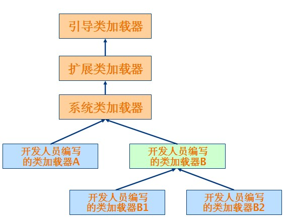

回顾Java类加载器
回顾 Java 类加载器
类加载器使得 Java 类可以被动态加载到 Java 虚拟机中并执行。类加载器从 JDK 1.0 就出现了，最初是为了满足 Java Applet 的需要而开发出来的。Java Applet 需要从远程下载 Java 类文件到浏览器中并执行。现在类加载器在 Web 容器和 OSGi 中得到了广泛的使用。一般来说，Java 应用的开发人员不需要直接同类加载器进行交互。Java 虚拟机默认的行为就已经足够满足大多数情况的需求了。不过如果遇到了需要与类加载器进行交互的情况，而对类加载器的机制又不是很了解的话，就很容易花大量的时间去调试 ClassNotFoundException和 NoClassDefFoundError等异常。
基本概念
类加载器（class loader）用来加载 Java 类到 Java 虚拟机中。一般来说，Java 虚拟机使用 Java 类的方式如下：Java 源程序（.java 文件）在经过 Java 编译器编译之后就被转换成 Java 字节代码（.class 文件）。类加载器负责读取 Java 字节代码，并转换成 java.lang.Class 类的一个实例。每个这样的实例用来表示一个 Java 类。通过此实例的 newInstance()方法就可以创建出该类的一个对象。实际的情况可能更加复杂，比如 Java 字节代码可能是通过工具动态生成的，也可能是通过网络下载的。
基本上所有的类加载器都是 java.lang.ClassLoader 类的一个实例。
ClassLoader 加载类的原理
类加载器的组织结构
Java 中的类加载器大致可以分成两类，一类是系统提供的，另外一类则是由 Java 应用开发人员编写的。系统提供的类加载器主要有下面三个：
- 引导类加载器（bootstrap class loader）：它用来加载 Java 的核心库，是用原生代码来实现的，并不继承自 java.lang.ClassLoader。
负责加载 JDK 中的核心类库，如：rt.jar、resources.jar、charsets.jar等。 - 扩展类加载器（extensions class loader）：它用来加载 Java 的扩展库。Java 虚拟机的实现会提供一个扩展库目录。该类加载器在此目录里面查找并加载 Java 类。
负责加载 Java 的扩展类库，默认加载 JAVA_HOME/jre/lib/ext 目下的所有 jar。 - 系统类加载器（system class loader \ app class loader）：它根据 Java 应用的类路径（CLASSPATH）来加载 Java 类。一般来说，Java 应用的类都是由它来完成加载的。可以通过 ClassLoader.getSystemClassLoader()来获取它。
除了系统提供的类加载器以外，可以通过继承 java.lang.ClassLoader 类的方式实现自己的类加载器，以满足一些特殊的需求。
类加载器树状组织结构示意图:

原理
ClassLoader 使用的是双亲委托模型来搜索类的，每个 ClassLoader 实例都有一个父类加载器的引用（不是继承的关系，是一个包含的关系），虚拟机内置的类加载器（Bootstrap ClassLoader）本身没有父类加载器，但可以用作其它 ClassLoader 实例的的父类加载器。当一个 ClassLoader 实例需要加载某个类时，它会试图亲自搜索某个类之前，先把这个任务委托给它的父类加载器，这个过程是由上至下依次检查的，首先由最顶层的类加载器 Bootstrap ClassLoader 试图加载，如果没加载到，则把任务转交给 Extension ClassLoader 试图加载，如果也没加载到，则转交给 App ClassLoader 进行加载，如果它也没有加载得到的话，则返回给委托的发起者，由它到指定的文件系统或网络等 URL 中加载该类。如果它们都没有加载到这个类时，则抛出 ClassNotFoundException 异常。否则将这个找到的类生成一个类的定义，并将它加载到内存当中，最后返回这个类在内存中的 Class 实例对象。
如何判定两个 Java 类是相同的
Java 虚拟机不仅要看类的全名是否相同，还要看加载此类的类加载器是否一样。只有两者都相同的情况，才认为两个类是相同的。即便是同样的字节代码，被不同的类加载器加载之后所得到的类，也是不同的。比如一个 Java 类 com.example.Sample，编译之后生成了字节代码文件 Sample.class。两个不同的类加载器 ClassLoaderA 和 ClassLoaderB 分别读取了这个 Sample.class文件，并定义出两个 java.lang.Class 类的实例来表示这个类。这两个实例是不相同的。对于 Java 虚拟机来说，它们是不同的类。
为什么是双亲委托
双亲委托也可称为代理模式，理解了上诉 Java 虚拟机判断 Java 类是否相同的原理就可明白，采用这种模式的原因是为了保证 Java 核心库的类型安全。所有 Java 应用都至少需要引用 java.lang.Object 类，也就是说在运行的时候，java.lang.Object 这个类需要被加载到 Java 虚拟机中。如果这个加载过程由 Java 应用自己的类加载器来完成的话，很可能就存在多个版本的 java.lang.Object 类，而且这些类之间是不兼容的。通过代理模式，对于 Java 核心库的类的加载工作由引导类加载器来统一完成，保证了 Java 应用所使用的都是同一个版本的 Java 核心库的类，是互相兼容的。
不同的类加载器为相同名称的类创建了额外的名称空间。相同名称的类可以并存在 Java 虚拟机中，只需要用不同的类加载器来加载它们即可。不同类加载器加载的类之间是不兼容的，这就相当于在 Java 虚拟机内部创建了一个个相互隔离的 Java 类空间。这种技术在许多框架中都被用到，如 tomcat。